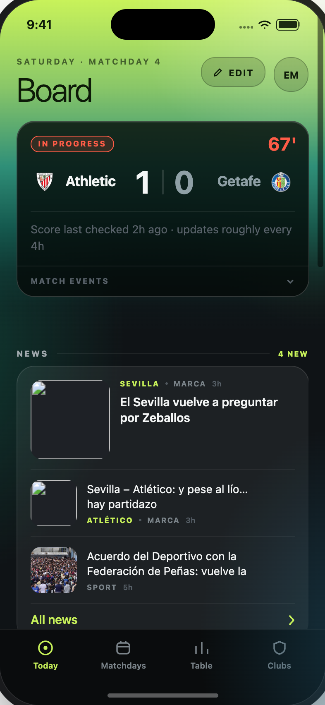
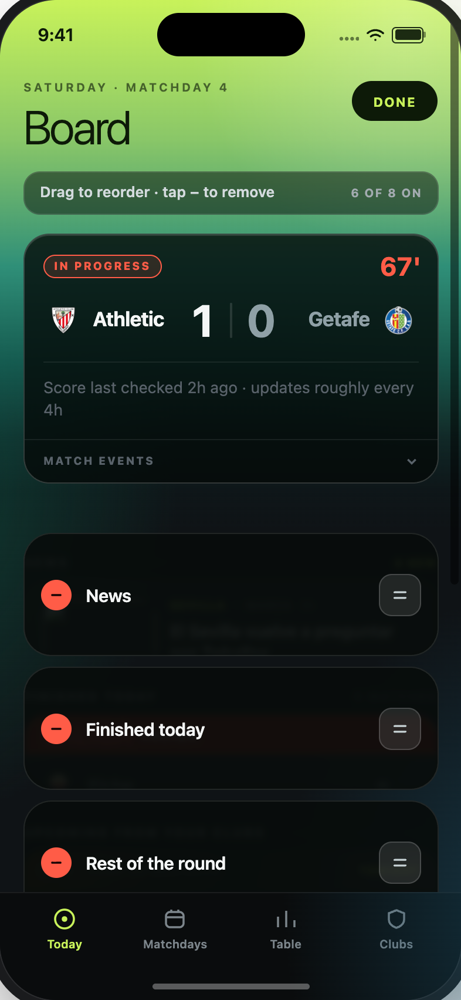
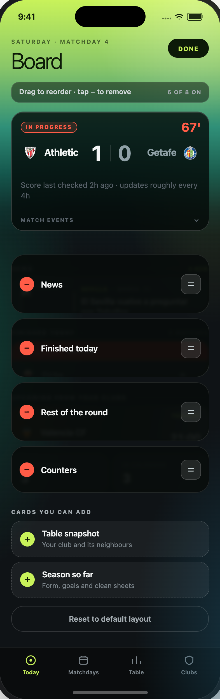

The Board — the app's homescreen — is a stack of cards the supporter owns. Edit mode lets them reorder that stack, remove cards they don't read, and put removed cards back. This document specifies that mode only; the rest of the app is unchanged.
Scope: Board (Today tab) · Entry, edit chrome, reorder, remove, add tray, reset, exit.



The live match panel is pinned: it stays a full card in edit mode, with no remove button and no handle. It is the reason the screen exists on a matchday, so it is not the supporter's to move.
| TRIGGER | RESULT |
|---|---|
| EDIT chip (crown, view mode only) | Edit mode on. No navigation, no sheet — the screen stays put. |
| DONE pill | Edit mode off. Layout is already saved; DONE only closes the mode. |
| Tab change / app background | Edit mode persists as screen state; layout itself is stored per user. |
| Account avatar | Hidden while editing — DONE owns the top-right slot and the two would collide. |
In edit mode each editable card keeps its position in the stack but is capped to a 104px row and veiled by a scrim, so the stack reads as a list of movable objects rather than live content.
| Row cap / gap | 104px max height · 10px vertical gap (0px in view mode) |
| Scrim | rgba(7,12,11,.93) · backdrop-blur 3px · radius 24 · 0.5px rgba(255,255,255,.1) border |
| Remove | 26px circle · fill #ff5c47 · glyph #160404 · left edge · tap = hide card |
| Label | Card name, 600 15px, single line, ellipsis |
| Drag handle | 34px square · radius 11 · rgba(255,255,255,.1) · right edge · pointerdown starts drag |
| Dragging | scale 1.015 · shadow 0 22px 44px rgba(0,0,0,.55) · z-index 20 |
| Remove | Tap −. The card leaves the stack immediately and appears in the add tray. No confirm, no undo toast: putting it back is one tap away. |
| Add tray | Heading CARDS YOU CAN ADD. Each row: lime + button (26px, #c8f25a on #101806), card name and one-line description, dashed 0.5px border. Tap anywhere on the row to add; the card returns to its remembered position in the order, not to the bottom. |
| Tray empty | “Every card is on your board.” replaces the rows — the section header stays so the affordance is still explained. |
| Reset | 44px outlined button, “Reset to default layout”. Restores the default order and the default hidden set in one step. Immediate, no confirm. |
| ID | LABEL | SHOWN WHEN | DEFAULT |
|---|---|---|---|
| last | Last result | no live match | on |
| next | Next up | no live match | on |
| news | News | follows ≥1 club | on |
| results | Finished today | always | on |
| upcoming | Rest of the round | follows ≥1 club | on |
| counters | Counters | follows ≥1 club | on |
| table | Table snapshot | always | off |
| season | Season so far | always | off |
| KEY | EN | ES |
|---|---|---|
| bdEditLabel | EDIT | EDITAR |
| bdDone | DONE | LISTO |
| bdHint | Drag to reorder · tap − to remove | Arrastra para ordenar · toca − para quitar |
| bdCount | 6 OF 8 ON | 6 ACTIVAS DE 8 |
| bdAdd | CARDS YOU CAN ADD | TARJETAS QUE PUEDES AÑADIR |
| bdAllOn | Every card is on your board. | Ya tienes todas las tarjetas. |
| bdReset | Reset to default layout | Volver al orden original |
| bdOrder | string[] · full order incl. hidden cards · default ['last','next','news','results','upcoming','counters','table','season'] |
| bdHidden | string[] · default ['table','season'] |
| bdEdit | boolean · screen state, not persisted with the layout |
| Persistence | Order and hidden set are per user and survive relaunch; hidden cards keep their slot so re-adding is not a re-sort. |
Prototype hooks for QA and screenshots: the prototype takes boardEdit (open the Board straight into edit mode) and boardScroll (land at a scroll offset) so any state in this document can be reproduced without a tap.
Source: AltaGama FC iOS.dc.html · ADR 0158 (“the Board is the user's, not ours”). Screenshots rendered at 2× from the prototype, 14 Sep 2026.